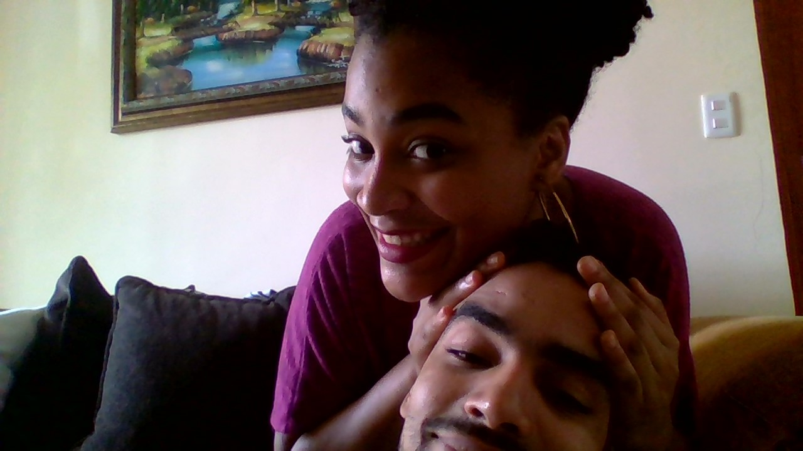

Ellos, mi querido Lector, Son puro Arte. Hacen Arte al verse a los ojos, hacen Arte cuando se Funden en un Abrazo, hacen Arte con tal solo tocarse, hacen Arte con tan solo sentirse, Producen Arte visual con el simple hecho de caminar juntos, cuando estan juntos son una especie de Arte Minimalista, su union se puede considerar simplemente como Arte
Ellos son compatibles, amables entre ellos, se protegen entre ellos mismos, Inseparables, Formidables, se complementan el uno al otro, se ayudan mutuamente pero principalmente Se Aman como locos Enamorados.
Su relacion no es perfecta, hay dias buenos y dias malos, hay risas pero tambien tristeza, Hay Amor pero tambien Enojo, desiluciones, entre otras etapas/momentos que se viven en una relacion, son cosas que pasan pero lo importante es como se disfruten los buenos momentos y como se solucionen los malos momentos, a veces solo nos hacen falta unos abrazos, un besho tierno en lugares donde te estas imaginando, a veces solo necesitamos olvidarnos de lo duro que fue el dia o de lo dificil que sera, a veces solo necesitamos una dosis de eso que nos mantiene unidos a pesar de todo, de eso que se alimenta nuestros corazones, de eso que me das, de eso que yo te doy, de aquello que le llaman los simples mundanos AMOR.
